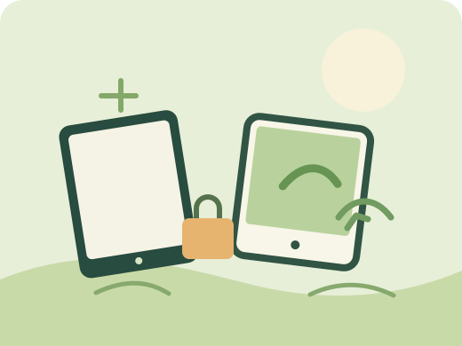

Small devices
Phones, tablets, cameras, smart watches, and handheld game consoles.
KNOW WHAT YOU'RE DISCARDING
Electronic waste, or e-waste, is any electrical or electronic item that is unwanted, broken, or at the end of its useful life.

COMMON EXAMPLES
Anything with a plug, battery, or circuit board may need special handling when it is no longer wanted.
Phones, tablets, cameras, smart watches, and handheld game consoles.
Laptops, keyboards, printers, routers, cables, and chargers.
Televisions, radios, speakers, kitchen appliances, and lamps.
Rechargeable batteries, circuit boards, and electronic components.
WHY DOES IT HAPPEN?
E-waste grows when we buy more devices and don't have a safe, convenient way to pass old ones on.
New models and software changes can make people replace devices that still work.
When parts or repair services are hard to find, a broken device may be discarded.
Electronics put in ordinary bins may end up in unsafe disposal or informal recycling.
Unsafe dismantling or burning can release harmful substances; lost devices also waste valuable materials that could be recovered.
Remember: E-waste can contain useful materials as well as substances that need careful handling. Keep it separate from everyday rubbish and ask your local authorised recycler how to prepare it.
Explore solutions →